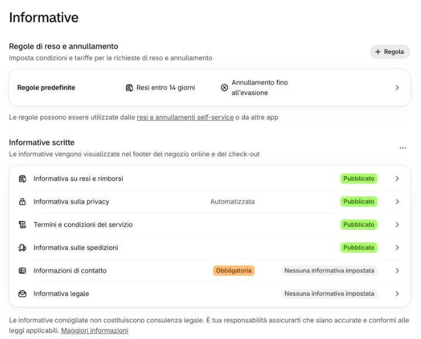

Cambiare le informative (privacy, resi, spedizioni, termini)
- 5 minuti
- Valgono anche al check-out
Le informative legali di Shopify: si vedono in fondo al sito e al check-out. Non sono le pagine «Spedizioni e consegne», «Resi e recessi», «Metodi di pagamento» e «Condizioni generali» del piede: quelle hanno il testo nel tema.
-
Cliccate «Impostazioni», in fondo al menu a sinistra, poi «Informative».
 1
1
-
In «Informative scritte» cliccate quella da cambiare.

Non qui Non qui 2Quali sono?
«Informativa su resi e rimborsi», «Informativa sulla privacy», «Termini e condizioni del servizio», «Informativa sulle spedizioni». Quella sulla privacy è «Automatizzata»: la scrive Shopify. Prima di cambiarla parlatene con chi segue la privacy dell’azienda.
E le parti con il riquadro rosso?
«Regole di reso e annullamento» decide come funzionano resi e annullamenti in Shopify; «Informazioni di contatto» e «Informativa legale» sono vuote. Per tutte e tre, scriveteci prima.
-
Cambiate il testo nella pagina che si apre e salvate.
Non vedo dove salvare
Quella pagina non l’abbiamo aperta insieme: il pulsante per salvare compare di solito dopo una modifica. Se non lo trovate, scriveteci.
-
Scriveteci se avete cambiato resi, spedizioni o termini.
Perché?
Le pagine «Spedizioni e consegne», «Resi e recessi», «Metodi di pagamento» e «Condizioni generali» del piede parlano delle stesse cose, ma il loro testo è nel tema: le allineiamo noi, così il sito non dice due cose diverse.
Sul sito
In fondo a ogni pagina, sotto «Termini e informative», ci sono i link alle quattro informative; le stesse compaiono al check-out.
Le pagine del menu «Assistenza» (Spedizioni e consegne, Resi e recessi, Metodi di pagamento, Condizioni generali) non cambiano da qui: per quelle, scriveteci.